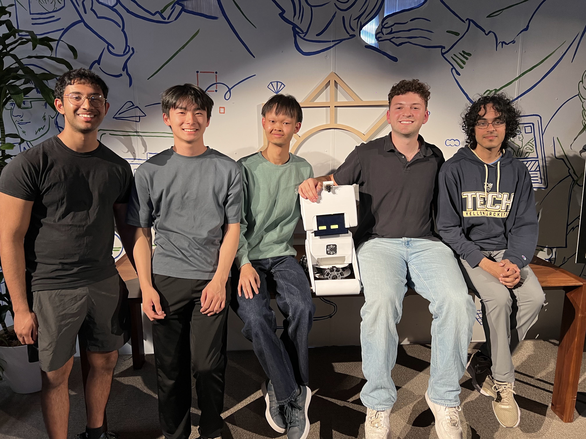
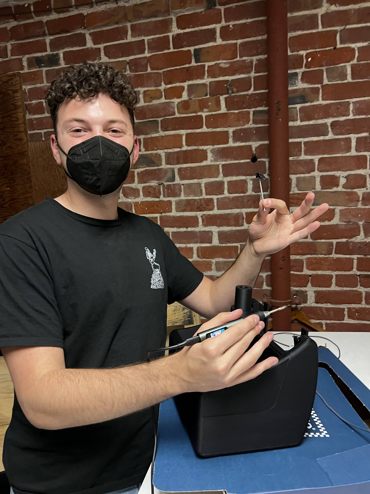
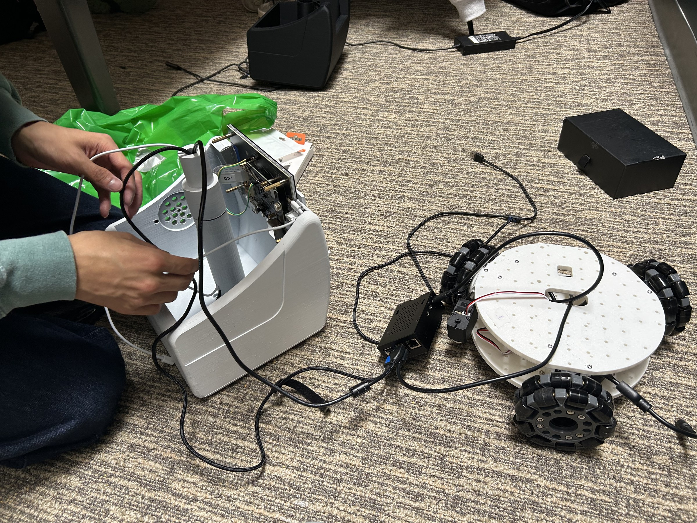
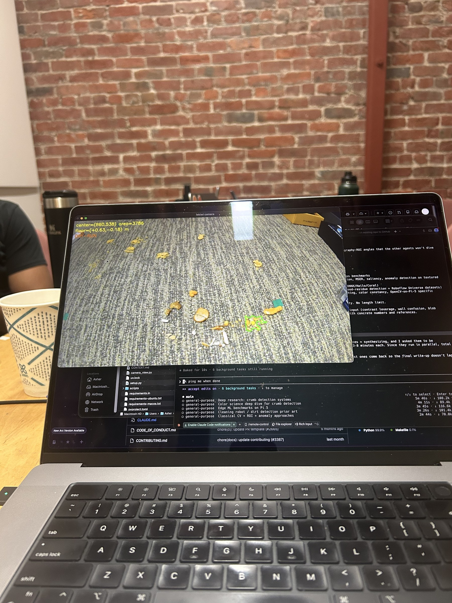

That clip is the whole reason we built MoBot. In May 2026, South Park Commons ran its first Embodied AI Hackathon, and my team showed up with no hardware and a simple idea: build a little WALL·E that actually cleans. Forty-seven hours later we had a working robot and a second-place finish out of more than thirty teams, several of them led by robotics PhDs.
We picked cleaning because it's the hardest version of the easy demo. Anyone can get a robot to drive in a circle. Getting one to look at a real floor, find a mess it has never seen before, drive to it, and deal with it—that's the part that breaks. We wanted to build the thing that breaks.
There were five of us, and we built the whole thing on-site—the body, the electronics, and the software.

MoBot started as a face. Before the wheels, before the body could do anything at all, we had a pair of eyes blinking on a screen—the moment it stopped being a pile of parts and started being a character. The rest of the weekend was the hardware fighting back: at one point a botched 3D print fouled the mechanism, and with no time to reprint, the fix was to take a soldering iron to it and melt the bad piece off by hand.

From there it came together on the floor: an omnidirectional wheelbase so it could drive in any direction, the printed body dropped on top, a Raspberry Pi and an ESP32 wired into the middle, and far too many loose cables.

The brain is a vision system I built and tuned in OpenCV—it picks messes out of the carpet across different surfaces and lighting, the thing that usually kills a hackathon vision demo the second the room's lights change, and drives the robot over to deal with them. This is what MoBot actually sees:

Forty-seven hours isn't enough time to build something good. It's barely enough to build something that works. But MoBot worked—it saw a real floor, found the mess, and went after it on its own—and that, in the end, was the whole point.